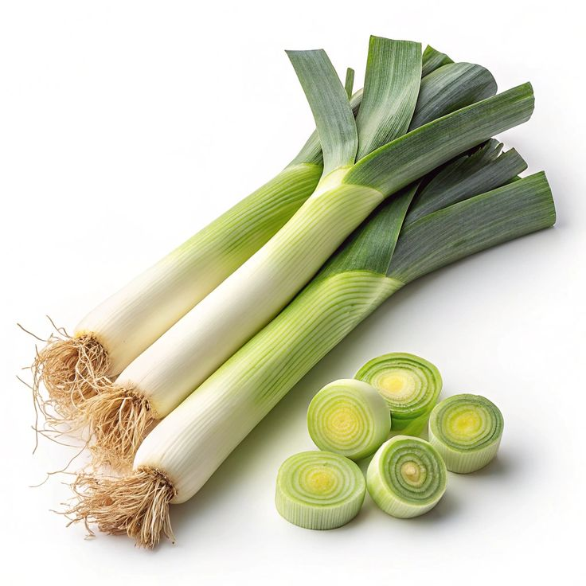

Pickling Onions
Our farm-fresh Pickling/Pearl Onions are small, tender, and naturally flavorful. With their delicate size and mild, slightly sweet taste, they’re perfect for pickling, roasting, stews, or adding depth to sauces and salads. Rich in vitamin C, antioxidants, and essential minerals like potassium, they help support immunity, heart health, and overall wellness. Low in calories yet full of nutrition, pearl onions are a versatile ingredient for both traditional and modern recipes. Their bite-sized shape makes them ideal for preserving and enhancing dishes with a burst of flavor. Harvested with care, we deliver them fresh from our fields to your kitchen, ensuring maximum taste, nutrition, and quality in every bulb.

White Onions
Our farm-fresh White Onions are crisp, pungent, and full of bold flavor. With their firm texture and sharp taste, they’re perfect for cooking, grilling, stir-fries, or adding depth to soups and stews. Rich in vitamin C, antioxidants, and essential minerals like potassium, they help support immunity, heart health, and overall wellness. Low in calories yet packed with nutrition, white onions are a versatile kitchen staple for both traditional and modern recipes. Their strong flavor mellows beautifully when cooked, making them ideal for enhancing savory dishes. Harvested with care, we deliver them fresh from our fields to your kitchen, ensuring maximum taste, nutrition, and quality in every bulb.

Red Onions
Our farm-fresh Red Onions are crisp, vibrant, and naturally full of flavor. With their striking purple-red skin and mild, slightly sweet taste, they’re perfect for salads, grilling, stir-fries, or adding depth to soups and stews. Rich in vitamin C, antioxidants, and essential minerals like potassium, they help support immunity, heart health, and overall wellness. Low in calories yet packed with nutrition, red onions are a versatile kitchen staple for both traditional and modern recipes. Their bold color and balanced flavor make them ideal for enhancing dishes with both taste and visual appeal. Harvested with care, we deliver them fresh from our fields to your kitchen, ensuring maximum taste, nutrition, and quality in every bulb.

Leeks
Our farm-fresh Leeks are tender, aromatic, and naturally full of flavor. With their long white stalks and delicate green tops, they’re perfect for soups, stews, stir-fries, or roasting into wholesome meals. Leeks are rich in vitamin K, vitamin C, and antioxidants, helping to support heart health, immunity, and overall wellness. Low in calories yet packed with nutrition, they add a mild, onion-like taste that enhances both traditional and modern recipes. Their gentle flavor makes them versatile for pairing with meats, grains, or other vegetables. Harvested with care, we deliver them fresh from our fields to your kitchen, ensuring maximum taste, nutrition, and quality in every stalk.

Spring Onions
Our farm-fresh Spring Onions are crisp, aromatic, and naturally full of flavor. With their tender white bulbs and vibrant green stalks, they’re perfect for salads, stir-fries, soups, or garnishing dishes with a fresh bite. Spring onions are rich in vitamin C, antioxidants, and essential minerals like potassium, helping to support immunity, heart health, and overall wellness. Low in calories yet packed with nutrition, they add a mild onion flavor that enhances both traditional and modern recipes. Their versatility makes them a kitchen favorite for adding freshness and color to meals. Harvested with care, we deliver them fresh from our fields to your kitchen, ensuring maximum taste, nutrition, and quality in every stalk.